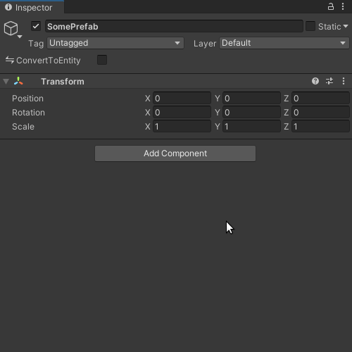
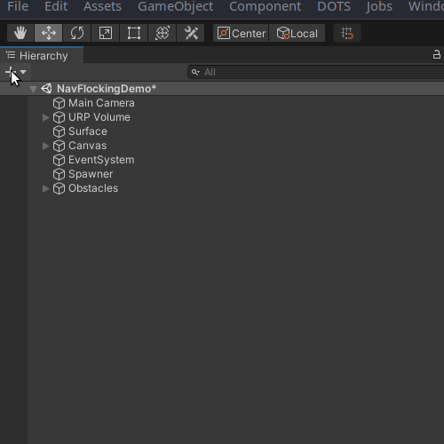
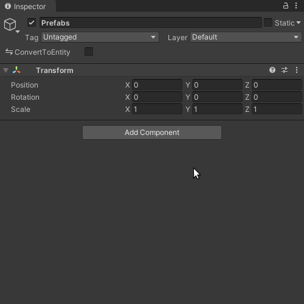
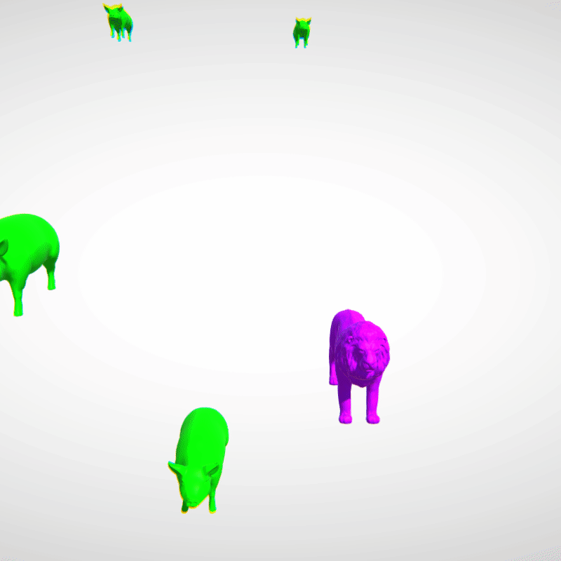

Spawning Prefabs With Unity DOTS
How to manage and instantiate entity prefabs.
Last updated on July 20, 2022.
Created on September 17, 2021.
Introduction
With Unity's implementation of the entity-component-system (ECS) pattern, there are two modes from which spawning can be initiated:
- Authoring, which is when we're manually designing stuff. That's when we're in the editor, adding GameObjects and adjusting parameters. Yes, with Unity ECS, we still use GameObjects for setting up levels and prefabs. We try to convert most of those GameObjects into entities upon startup with special scripts. Sometimes it's not feasible, in which we take a hybrid approach (orchestrating DOTS and non-DOTS code).
- Runtime, which is referring to the period after authoring, and before execution halts. In other words, this is what happens while people are playing your game. It's the process, minus authoring conversion at the beginning.
Since Unity DOTS is all about conquering CPU-bound tasks, you may be interested in it for creating a runtime-heavy game. It's great for city builders, sandboxes, real-time strategy games, etc. With that in mind, if you're anything like me, you're mainly interested in spawning at runtime, specifically using prefabs. I created a package for this, and I'll show you how to use it.
Prerequisites
Before you proceed, make sure you've installed the Entities and Hybrid
Renderer packages in your project, at the bare minimum. This tutorial has been
updated for Entities and Hybrid Renderer 0.51.0-preview.32. It may be
further updated to account for future developments.
You also need to install the Entity Prefab Groups package by following the provided instructions, which is part of my Unity monorepo.
Authoring
After you've installed Entity Prefab Groups, you're ready to create a component (in terms of ECS). Here's how:
- Create a script called
SomeComponent.cs. - Copy-paste this code into the script (namespacing optional):
using System;
using Unity.Entities;
[Serializable]
[GenerateAuthoringComponent]
public struct SomeComponent : IComponentData { }
The component ought to be serializable for saving and loading, as indicated by
the Serializable attribute. Additionally, the GenerateAuthoringComponent
attribute instructs Unity to generate a special MonoBehaviour for you, one
that adds SomeComponent to the entity during the conversion process.
Also, it's worth noting that this component is a special one: it's a component
tag, because there's no data in it. There could be, however, if you want.
That's up to you. You could add any
blittable data to the
component, such as an Entity, a float3, or whatever. Generated authoring
components allow you to change these properties during authoring. Entities end
up being represented as GameObjects during authoring, so you can reference them
as long as they're being converted into entities too, even children of a prefab!
Anyway, after you save the script and switch back to the Unity editor, you'll have an authoring component to work with.

Go ahead and add that component to the prefab. Note how it's named Some Component Authoring, indicating exactly what it's intended for.
Next, open up a scene and create a new GameObject called Prefabs.

Now you're ready turn that GameObject into an EntityPrefabGroup! Add it just
like you would any other MonoBehaviour. Then add the prefab you made to its
list.

The EntityPrefabGroup adds the needed ConvertToEntity component
automatically, which is used to convert a GameObject into an entity. Unless
specified otherwise with a custom authoring script, this conversion will even
include the transform, mesh, render bounds, etc. For your regular workflow, I
recommend maximally exploiting the GenerateAuthoringComponent attribute to
focus on the data relevant to your work.
Runtime
Single-threaded Context
It's time to spawn some entities:
using Reese.EntityPrefabGroups;
using Unity.Entities;
using Unity.Mathematics;
using Unity.Transforms;
public partial class SomeSystem : SystemBase
{
protected override void OnUpdate()
{
var somePrefab = EntityManager.GetPrefab<SomeComponent>();
var someInstance = EntityManager.Instantiate(somePrefab);
var random = new Unity.Mathematics.Random((uint)new System.Random().Next());
EntityManager.AddComponentData(someInstance, new Translation
{
Value = random.NextFloat3(-100, 100)
});
EntityManager.AddComponentData(someInstance, new Rotation
{
Value = quaternion.Euler(random.NextFloat3())
});
EntityManager.AddComponentData(someInstance, new Scale
{
Value = random.NextFloat() * 5
});
}
}
In the above example, we get the entity prefab associated with SomeComponent.
Since GetPrefab runs a query behind the scenes, it can only be safely run from
OnUpdate, as to opposed to say, OnCreate and OnStartRunning. That said,
queries are extremely efficient, so creating and executing them each frame is
perfectly fine. This does not have the same performance impact as finding
GameObjects, or getting their attached scripts, per frame.
Furthermore, be aware that the component, SomeComponent in this case, should
be a singleton. This means it should uniquely identify the prefab—other
prefabs should not have that component! Now, just to be clear, singletons and
tags are two different concepts. A singleton could be a component tag, or it
could have various fields.
somePrefab is instantiated by creating a new someInstance each frame. We
randomize the Translation, Rotation, and Scale component values. Note how
I use AddComponentData instead of SetComponentData. This is because setting
assumes that a component already exists, even when it doesn't, which could cause
a runtime error. Adding involves a check that actually either adds or sets a
component, with no noticeable impact on performance. The main downside to adding
instead of setting is the potential to impose structural changes, which we'll
discuss shortly.
Anyhow, the result of our code ought to look something like this:
Well, maybe you're not using skulls, but I am.
And so far, we're not even taking advantage of the fact that our prefabs are
grouped. What if we wanted to spawn random animals, or variants of anything? To
do that, you would add your prefab variants to an EntityPrefabGroup list. That
group GameObject would require its own singleton component, which you've already
learned how to create in this tutorial.
With all that in mind, we could spawn variants from said group like so:
using Reese.EntityPrefabGroups;
using Unity.Entities;
using Unity.Transforms;
public partial class SomeSystem : SystemBase
{
protected override void OnUpdate()
{
var animalPrefabs = EntityManager.GetPrefabs<Animal>().Reinterpret<Entity>();
var randomIndex = UnityEngine.Random.Range(0, animalPrefabs.Length);
var someInstance = EntityManager.Instantiate(animalPrefabs[randomIndex]);
var random = new Unity.Mathematics.Random((uint)new System.Random().Next());
EntityManager.AddComponentData(someInstance, new Translation
{
Value = random.NextFloat3(-100, 100)
});
}
}
There's a subtle difference here: this time we call GetPrefabs plural, rather
than the singular GetPrefab. It should be run from OnUpdate as well. This
returns a DynamicBuffer<PrefabGroup>. The PrefabGroup comes from the Entity
Prefab Groups package, and its elements can be converted into entities with
ease. That's where Reinterpret<Entity> comes in. Ultimately, animalPrefabs
evaluates as DynamicBuffer<Entity>. That buffer, I should mention, is just a
way to hold a variable number of elements pertaining to a blittable type.
There's not much else here. We instantiate a randomly selected prefab from said buffer. Then we just set a random translation this time. In the process, we've used three different random number generators out of sheer disregard that the API of one may cover all our needs. Too bad we'll never know, because we don't read APIs, nor documentation.
We're programmers, after all.
If you've programmed (and authored!) correctly up until this point, then you should see something like this:

In all seriousness, you ought to familiarize yourself with the EntityManager.
Why? Because there's a lot it can do that I can't cover in a tutorial. It can
bulk-spawn entities using a NativeArray<Entity>, for example. Read more about
the EntityManager
here.
Parallel Context
Just to clarify, everything we have done has been on the main thread. All instantiation occurs on the main thread, even if prompted from a parallel context. To understand why that is, you have to consider that entities and their components compose a memory layout. A term for when this layout changes is the structural change, which occurs when entities, or their components, are added or removed.
Structural changes result in synchronization points, wherein all jobs must complete for processing to continue. As the EntityManager documentation puts it, this "blocks the main thread and prevents the application from taking advantage of all available cores as the running Jobs wind down." Thus, long story short, you don't want parallel jobs winding up and down multiple times in a single frame due to sync points, so we must orchestrate said jobs with care. We want to try to keep it down to only one sync point, if possible, at the beginning or end of a frame. The best way to attempt this is to use:
- A memory barrier, which, in the case of Unity ECS, is a reference to the
EntityCommandBufferSystem. This system can queue up commands performed during parallel-executing jobs. Commands performed with the memory barrier execute deterministically, so they're played back in order. When are they played back? Either at the end or beginning of a frame, depending on which flavor you choose. - And you need a command buffer, the actual buffer of commands that the memory barrier enqueues.
Putting what we know about the memory barrier and command buffer together, you can copy-paste the following as a repeatable pattern for processing in a parallel context with entities:
namespace SomeNamespace
{
public partial class SomeSystem : SystemBase
{
EntityCommandBufferSystem barrier => World.GetOrCreateSystem<EndSimulationEntityCommandBufferSystem>();
protected override void OnUpdate()
{
var commandBuffer = barrier.CreateCommandBuffer().AsParallelWriter();
Entities
.WithAll<SomeComponent>()
.ForEach((Entity entity, int entityInQueryIndex) =>
{
if (someConditionMet) commandBuffer.Instantiate(entityInQueryIndex, entity);
})
.WithName("SomeJob")
.ScheduleParallel();
barrier.AddJobHandleForProducer(Dependency);
}
}
}
You'll notice that, after we create the memory buffer, we create a parallel
command buffer from it via AsParallelWriter. According to the
docs,
the magic entityInQueryIndex should "be used as the jobIndex for adding
commands to a concurrent EntityCommandBuffer," usually instead of the
nativeThreadIndex.
We also inform the memory barrier, via AddJobHandleForProducer, that this
system is in fact producing, which effectively means using the command buffer
in any way that modifies the memory layout. Every time a job is generated via
ForEach in a SystemBase, the system's built-in Dependency is automatically
updated, which is simply a job handle. That's why we pass it via
AddJobHandleForProducer following the job definition.
Finally, please familiarize yourself with the CommandBuffer
here.
Do not fear it. It performs almost all of the same exact operations as the
EntityManager, with similar method names. Remember, all you're doing with it
is queuing up commands to be executed either at the beginning or end of a frame
on the main thread.
I hope this helps!